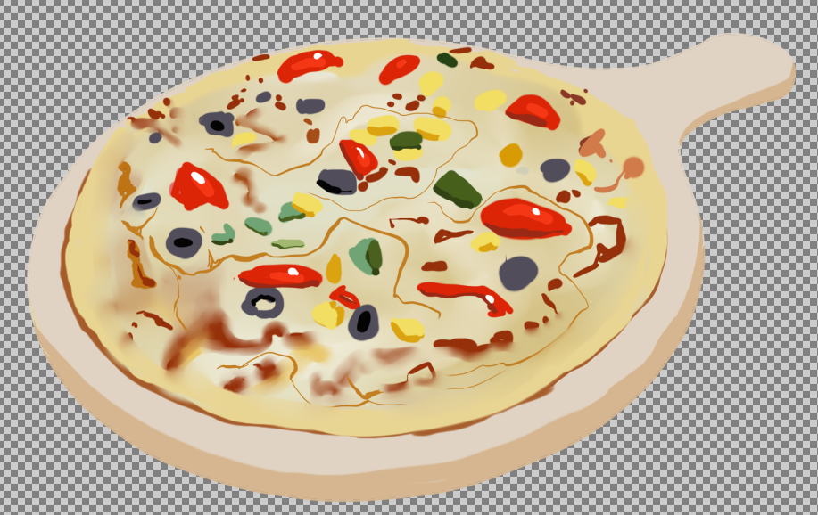

Fruit Pizza
A fruit pizza is a type of pastry that is
distinguished by its pizza-shaped cookie crust, frosting, and fruit toppings.
Fruit pizza is well known for the colorful designs and
patterns made by the intricate arrangement of the many different fruits topping the dessert.
Given ingredients for Recipe
| Ingredient |
Amount(Quantity) |
- English muffin
|
- Manageable Amount
|
- Fat Cream Cheese
|
- Two(2) Tablespoons reduced
|
- Strawberries
|
- Two(2) TableSpoons Sliced
|
- Blueberries
|
- Two(2) Tablespoons
|
- Pineapple
|
- Two(2) Tablespoons Crushed
|
Steps in preparing Fruit pizza
- Pat cookie dough into an ungreased 14-in. pizza pan.
Bake at 350°
for 15-18 minutes or until deep golden brown; cool.
- In a bowl, beat the cream cheese and
confectioners' sugar until smooth.
Fold in whipped topping.
Spread over crust. Arrange fruit on top.
- In a saucepan, bring the sugar, orange juice, water, lemon juice,
cornstarch and salt
to a boil, stirring constantly for 2 minutes or until thickened.
Cool; brush over fruit. Chill. Store in refrigerator